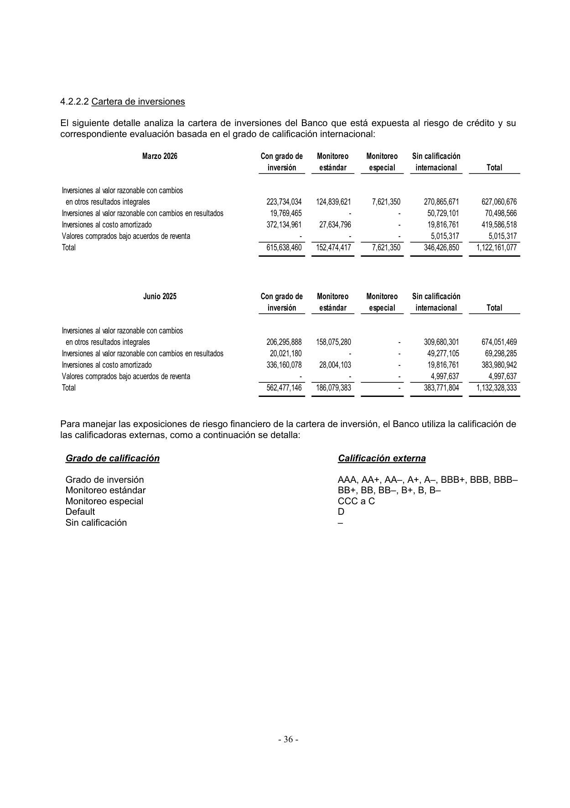

<title>Global Bank — Renglones con ganancias del portafolio de inversiones</title>
<meta name="viewport" content="width=device-width, initial-scale=1">
<style>
<style>
:root{
  --plane:#eef1f5; --surface:#f8f9fb; --surface-2:#ffffff;
  --ink:#0f1620; --ink-2:#475062; --muted:#8a91a0; --hair:#dde2ea; --hair-2:#c7cedb;
  --accent:#2a78d6; --accent-soft:#e7f0fc;
  --s1:#2a78d6; --s2:#1baf7a; --s3:#c98a00; --s6:#e34948;
  --good:#0a8a3a; --warn:#b8770a; --crit:#c0392b;
  --good-bg:#e4f4ea; --warn-bg:#fbf1dc; --crit-bg:#fae5e2; --info-bg:#e7f0fc;
  --shadow:0 1px 2px rgba(15,22,32,.04),0 8px 24px rgba(15,22,32,.06);
  --mono:ui-monospace,"SF Mono","SFMono-Regular",Menlo,Consolas,monospace;
  --sans:system-ui,-apple-system,"Segoe UI",Roboto,sans-serif;
}
@media (prefers-color-scheme:dark){
  :root{
    --plane:#0a0c10; --surface:#12161d; --surface-2:#171c25;
    --ink:#f2f5fa; --ink-2:#a8b0c0; --muted:#6b7382; --hair:#242a34; --hair-2:#2f3744;
    --accent:#4a90e2; --accent-soft:#16273c;
    --s1:#3987e5; --s2:#199e70; --s3:#c98500; --s6:#e66767;
    --good:#3bbf6a; --warn:#e0a52c; --crit:#e8756a;
    --good-bg:#12291b; --warn-bg:#2a2210; --crit-bg:#2c1815; --info-bg:#16273c;
    --shadow:0 1px 2px rgba(0,0,0,.3),0 10px 30px rgba(0,0,0,.4);
  }
}
:root[data-theme="dark"]{
  --plane:#0a0c10; --surface:#12161d; --surface-2:#171c25;
  --ink:#f2f5fa; --ink-2:#a8b0c0; --muted:#6b7382; --hair:#242a34; --hair-2:#2f3744;
  --accent:#4a90e2; --accent-soft:#16273c;
  --s1:#3987e5; --s2:#199e70; --s3:#c98500; --s6:#e66767;
  --good:#3bbf6a; --warn:#e0a52c; --crit:#e8756a;
  --good-bg:#12291b; --warn-bg:#2a2210; --crit-bg:#2c1815; --info-bg:#16273c;
}
:root[data-theme="light"]{
  --plane:#eef1f5; --surface:#f8f9fb; --surface-2:#ffffff;
  --ink:#0f1620; --ink-2:#475062; --muted:#8a91a0; --hair:#dde2ea; --hair-2:#c7cedb;
  --accent:#2a78d6; --accent-soft:#e7f0fc;
  --s1:#2a78d6; --s2:#1baf7a; --s3:#c98a00; --s6:#e34948;
  --good:#0a8a3a; --warn:#b8770a; --crit:#c0392b;
  --good-bg:#e4f4ea; --warn-bg:#fbf1dc; --crit-bg:#fae5e2; --info-bg:#e7f0fc;
}
*{box-sizing:border-box}
html{scroll-behavior:smooth}
body{margin:0;background:var(--plane);color:var(--ink);font-family:var(--sans);
  font-size:16px;line-height:1.58;-webkit-font-smoothing:antialiased}
.wrap{max-width:1000px;margin:0 auto;padding:0 24px}
h1,h2,h3{text-wrap:balance;line-height:1.18;margin:0}
.mono{font-family:var(--mono)}
a{color:var(--accent)}

header.top{position:sticky;top:0;z-index:40;background:color-mix(in srgb,var(--plane) 90%,transparent);
  backdrop-filter:blur(10px);border-bottom:1px solid var(--hair)}
.top-in{display:flex;align-items:center;gap:14px;height:56px;max-width:1000px;margin:0 auto;padding:0 24px}
.brandmark{display:flex;align-items:center;gap:10px;font-weight:680;letter-spacing:-.01em;font-size:15px}
.brandmark .dot{width:9px;height:9px;border-radius:50%;background:var(--accent);box-shadow:0 0 0 4px var(--accent-soft)}
.top-spacer{flex:1}
.top-in a{font-size:13px;color:var(--ink-2);text-decoration:none}
.top-in a:hover{color:var(--accent)}

.hero{padding:44px 0 26px;border-bottom:1px solid var(--hair)}
.eyebrow{font-family:var(--mono);font-size:12px;letter-spacing:.08em;text-transform:uppercase;color:var(--accent);font-weight:600}
h1{font-size:33px;font-weight:720;letter-spacing:-.02em;margin:12px 0 10px}
.lede{font-size:17px;color:var(--ink-2);max-width:74ch}
.meta-row{display:flex;flex-wrap:wrap;gap:8px;margin-top:18px}
.pill{font-size:12.5px;background:var(--surface-2);border:1px solid var(--hair);border-radius:999px;padding:4px 12px;color:var(--ink-2)}
.pill b{color:var(--ink)}

section{padding:34px 0;border-bottom:1px solid var(--hair)}
.sec-head{display:flex;align-items:baseline;gap:12px;margin-bottom:14px}
.sec-num{font-family:var(--mono);font-size:12px;color:var(--muted);font-weight:600}
h2{font-size:23px;font-weight:680;letter-spacing:-.01em}
h3{font-size:15.5px;font-weight:640;margin:20px 0 7px}
p{margin:0 0 12px}
.sub{color:var(--ink-2)}

.tbl-scroll{overflow-x:auto;margin:14px 0;border:1px solid var(--hair);border-radius:12px}
table{border-collapse:collapse;width:100%;font-size:14px;background:var(--surface-2);min-width:640px}
th,td{text-align:left;padding:9px 13px;border-bottom:1px solid var(--hair);vertical-align:top}
thead th{background:var(--surface);font-weight:640;font-size:12px;color:var(--ink-2);
  text-transform:uppercase;letter-spacing:.03em}
tbody tr:last-child td{border-bottom:none}
.num{text-align:right;font-variant-numeric:tabular-nums;font-family:var(--mono);font-size:13px;white-space:nowrap}
.tot td{font-weight:700;background:color-mix(in srgb,var(--accent-soft) 55%,transparent)}
.sub-row td{background:color-mix(in srgb,var(--surface) 60%,transparent);font-size:13px}
.sub-row td:first-child{padding-left:26px;color:var(--ink-2)}
.neg{color:var(--crit)}
.mini{font-size:12px;color:var(--muted)}

.badge{display:inline-block;font-size:11px;font-weight:640;padding:1px 8px;border-radius:6px;font-family:var(--mono);letter-spacing:.02em;white-space:nowrap}
.b-pl{background:var(--accent-soft);color:var(--accent)}
.b-oci{background:var(--warn-bg);color:var(--warn)}
.b-prov{background:var(--crit-bg);color:var(--crit)}
.b-yes{background:var(--good-bg);color:var(--good)}
.b-no{background:var(--crit-bg);color:var(--crit)}

.callout{display:flex;gap:13px;padding:15px 17px;border-radius:12px;margin:16px 0;font-size:14.5px;line-height:1.5}
.callout .ic{flex:0 0 24px;width:24px;height:24px;border-radius:50%;display:grid;place-items:center;font-weight:700;font-size:14px;color:#fff}
.co-key{background:var(--crit-bg)} .co-key .ic{background:var(--crit)}
.co-info{background:var(--info-bg)} .co-info .ic{background:var(--accent)}
.co-good{background:var(--good-bg)} .co-good .ic{background:var(--good)}

.map{display:grid;grid-template-columns:repeat(auto-fit,minmax(220px,1fr));gap:14px;margin:18px 0}
.mapc{background:var(--surface-2);border:1px solid var(--hair);border-radius:14px;padding:15px 17px;box-shadow:var(--shadow)}
.mapc .t{font-size:12px;color:var(--muted);text-transform:uppercase;letter-spacing:.04em;font-weight:600;margin-bottom:8px}
.mapc ul{margin:0;padding-left:16px;font-size:13.5px;color:var(--ink-2)}
.mapc li{margin:4px 0}
.mapc li b{color:var(--ink)}
.mapc .amt{font-family:var(--mono);font-size:12.5px}

.ev-grid{display:grid;grid-template-columns:repeat(auto-fill,minmax(170px,1fr));gap:12px;margin-top:12px}
.ev{display:block;background:var(--surface-2);border:1px solid var(--hair);border-radius:10px;overflow:hidden;text-decoration:none;color:inherit;box-shadow:var(--shadow)}
.ev img{width:100%;display:block;aspect-ratio:3/4;object-fit:cover;object-position:top;background:#fff;border-bottom:1px solid var(--hair)}
.ev .cap{padding:8px 10px;font-size:12px;color:var(--ink-2)}
.ev .cap b{display:block;color:var(--ink);font-size:12.5px;margin-bottom:1px}
.ev:hover{border-color:var(--accent)}

.kbd{font-family:var(--mono);font-size:12.5px;background:var(--surface);border:1px solid var(--hair-2);border-radius:5px;padding:1px 6px}
footer{padding:30px 0 60px;color:var(--muted);font-size:13px}
@media(max-width:640px){h1{font-size:26px}.hero{padding:32px 0 22px}}
</style>
</style>

<header class="top">
  <div class="top-in">
    <span class="brandmark"><span class="dot"></span>Global Bank · Ganancias de inversiones</span>
    <span class="top-spacer"></span>
    <a href="index.html">← Radar de Inversiones</a>
  </div>
</header>

<main class="wrap">
  <div class="hero">
    <div class="eyebrow">Nota de trabajo · mapa de renglones</div>
    <h1>¿Dónde aparecen las ganancias del portafolio de inversiones?</h1>
    <p class="lede">Rastreo, renglón por renglón, del último estado financiero de Global Bank (Interino a 31-mar-2026, que es el <b>Q3 de su año fiscal que cierra en junio</b>, no auditado). El rasgo distintivo aquí: <b>no existe una línea única de "ganancia en valores"</b> en la cara del estado — los resultados del portafolio están <b>embebidos dentro de "Otros ingresos, neto" (Nota 23)</b> y hay que extraerlos. Las cifras son del <b>acumulado de 9 meses</b>.</p>
    <div class="meta-row">
      <span class="pill">Emisor: <b>Global Bank Corporation y Subsidiarias (consolidado, cierre fiscal junio)</b></span>
      <span class="pill">Corte: <b>31-mar-2026</b> (interino, no auditado · Q3 FY-jun)</span>
      <span class="pill">Período: <b>9 meses acumulados (jul-2025→mar-2026)</b></span>
      <span class="pill">Moneda: <b>USD</b> (B/. a la par)</span>
    </div>
  </div>
  <section id="mapa">
    <div class="sec-head"><span class="sec-num">TL;DR</span><h2>El mapa completo — hay que extraer de 'Otros ingresos'</h2></div>
    <p class="sub">En Global Bank los resultados de valores no tienen renglón propio: viven <b>dentro de "Otros ingresos, neto"</b> (Nota 23), mezclados con seguros, fiducia y otros. Hay que extraer los cuatro componentes de valores. El resto del mapa (interés, ORI, provisión) sí es directo. Cifras del acumulado de 9 meses.</p>
    <div class="map">
      <div class="mapc">
        <div class="t">① Estado de Resultados · interés</div>
        <ul>
          <li><b>Intereses ganados sobre inversiones</b> <span class="amt">36,843,768</span> — acumulado 9 meses (Nota 22)</li>
        </ul>
      </div>
      <div class="mapc">
        <div class="t">② Nota 23 · dentro de 'Otros ingresos'</div>
        <ul>
          <li>Cuatro componentes de valores por <b>1,267,244</b> netos — sin línea propia en la cara del estado</li>
        </ul>
      </div>
      <div class="mapc">
        <div class="t">③ Resultado Integral (ORI)</div>
        <ul>
          <li><b>Cambio neto en valuación FVOCI</b> <span class="amt">8,009,050</span> — no realizada</li>
          <li><b>Transferido a resultados</b> <span class="amt">174,147</span> — reciclaje</li>
          <li><b>Derivados de cobertura</b> <span class="amt">1,197,627</span> — no portafolio</li>
        </ul>
      </div>
      <div class="mapc">
        <div class="t">④ P&amp;L · provisión (netea)</div>
        <ul>
          <li><b>Provisión (reversión) para inversiones</b> <span class="amt neg">(3,756,675)</span> — cargo grande 9 meses</li>
        </ul>
      </div>
    </div>
    <div class="callout co-key"><span class="ic">!</span>
      <div><b>El renglón que hay que extraer: no existe una línea de "ganancia en valores".</b> Los resultados del portafolio están repartidos en <b>cuatro componentes dentro de "Otros ingresos, neto" (Nota 23)</b>: venta a costo amortizado 1,466,110, valuación FVTPL 115,381, pérdida en venta FVTPL (140,100) y pérdida en venta FVOCI (174,147) — subtotal <b>1,267,244</b> en 9 meses. Todos son de valores (sin divisas ni derivados en esta nota). Sin extraerlos de "Otros ingresos", el resultado del portafolio queda invisible. La provisión para inversiones fue un <b>cargo grande</b> este ejercicio (3.76 M).</div>
    </div>
  </section>
  <section>
    <div class="sec-head"><span class="sec-num">01</span><h2>Estado de Ganancias o Pérdidas (P&amp;L)</h2></div>
    <p class="sub">PDF p.5 (cara) y Nota 22 (p.74). El interés sí tiene su línea; el resultado de valuación/venta hay que buscarlo en "Otros ingresos, neto" (Nota 23). Cifras del <b>acumulado de 9 meses</b> (columna comparativa: 9 meses del año fiscal previo).</p>
    <div class="tbl-scroll"><table>
      <thead><tr><th>Renglón (P&amp;L)</th><th class="num">9M-2026</th><th class="num">9M-2025</th><th>Tipo</th><th>¿Solo portafolio?</th></tr></thead>
      <tbody>
        <tr><td><b>Intereses ganados sobre inversiones</b> <span class="mini">(Nota 22)</span></td><td class="num">36,843,768</td><td class="num">33,857,191</td><td><span class="badge b-pl">Interés</span></td><td><span class="badge b-yes">Sí — cartera</span></td></tr>
        <tr><td><b>Resultado de valores</b> — dentro de "Otros ingresos, neto" <span class="mini">(Nota 23)</span></td><td class="num">1,267,244</td><td class="num">—</td><td><span class="badge b-pl">Valuación/venta</span></td><td><span class="badge b-yes">Sí — extraído</span></td></tr>
      </tbody>
    </table></div>
    <p class="mini">La cara del estado solo muestra "Otros ingresos, neto" como total; el interino no le pone una línea propia al resultado de valores. El trimestre aislado (3 meses ene-mar 2026) del resultado de valores fue 203,321.</p>
  </section>
  <section>
    <div class="sec-head"><span class="sec-num">02</span><h2>Nota 23 — componentes de valores dentro de "Otros ingresos, neto"</h2></div>
    <p class="sub">PDF p.74. Los cuatro renglones de valores que hay que extraer del cajón de "Otros ingresos". Todos son cartera; no hay divisas ni derivados aquí. Cifras del acumulado de 9 meses.</p>
    <div class="tbl-scroll"><table>
      <thead><tr><th>Componente</th><th class="num">9M-2026</th><th class="num">9M-2025</th><th>¿Portafolio de inversiones?</th></tr></thead>
      <tbody>
        <tr><td>Ganancia en venta de inversiones a costo amortizado</td><td class="num">1,466,110</td><td class="num">—</td><td><span class="badge b-yes">Sí — venta CA</span></td></tr>
        <tr><td>Ganancia en instrumentos al VR con cambios en resultados, neta</td><td class="num">115,381</td><td class="num">519,824</td><td><span class="badge b-yes">Sí — valuación FVTPL</span></td></tr>
        <tr><td>Pérdida en venta de inversiones con cambios en resultados</td><td class="num neg">(140,100)</td><td class="num neg">(9,766)</td><td><span class="badge b-yes">Sí — venta FVTPL</span></td></tr>
        <tr><td>(Pérdida) ganancia en venta de inversiones con cambios en ORI</td><td class="num neg">(174,147)</td><td class="num">713,983</td><td><span class="badge b-yes">Sí — venta FVOCI</span></td></tr>
        <tr class="tot"><td>→ Subtotal <b>portafolio de inversiones</b> (9 meses)</td><td class="num">1,267,244</td><td class="num">—</td><td><span class="badge b-yes">Sí</span></td></tr>
      </tbody>
    </table></div>
    <p class="mini">Nota inusual del ejercicio: una <b>ganancia por venta de inversiones a costo amortizado</b> (1.47 M) — vender papel held-to-maturity es atípico y suele señalar reposicionamiento del libro.</p>
  </section>
  <section>
    <div class="sec-head"><span class="sec-num">03</span><h2>Estado de Resultado Integral (ORI / patrimonio)</h2></div>
    <p class="sub">PDF p.6 (estado combinado de ganancia/pérdida y otros resultados integrales), solo columna de 9 meses. Incluye una línea de <b>derivados de cobertura</b> que no es del portafolio de valores.</p>
    <div class="tbl-scroll"><table>
      <thead><tr><th>Renglón (ORI)</th><th class="num">9M-2026</th><th class="num">9M-2025</th><th>Naturaleza</th></tr></thead>
      <tbody>
        <tr><td><b>Cambio neto en valuación de inversiones a VR con cambios en ORI</b></td><td class="num">8,009,050</td><td class="num">9,908,204</td><td><span class="badge b-oci">No realizada · FVOCI</span></td></tr>
        <tr><td><b>Monto neto transferido a ganancia o pérdida</b></td><td class="num">174,147</td><td class="num neg">(713,983)</td><td><span class="badge b-oci">Reciclaje</span></td></tr>
        <tr><td>Provisión (reversión) para inversiones (ECL en ORI)</td><td class="num">3,757,268</td><td class="num neg">(114,596)</td><td><span class="badge b-oci">ECL en ORI</span></td></tr>
        <tr><td>Cambio neto en instrumentos derivados de cobertura</td><td class="num">1,197,627</td><td class="num neg">(1,970,470)</td><td><span class="badge b-oci">No portafolio · cobertura</span></td></tr>
      </tbody>
    </table></div>
    <div class="callout co-info"><span class="ic">i</span>
      <div><b>ORI positivo este ejercicio.</b> A diferencia de Banco General y BAC (que tuvieron valuación FVOCI negativa en el trimestre calendario), el acumulado de 9 meses de Global muestra una <b>ganancia no realizada de 8.0 M</b> en la cartera FVOCI. La línea de <b>derivados de cobertura (1.20 M)</b> está aparte y no es del portafolio de valores.</div>
    </div>
  </section>
  <section>
    <div class="sec-head"><span class="sec-num">04</span><h2>P&amp;L — provisión para inversiones (netea)</h2></div>
    <p class="sub">PDF p.5. En Global el deterioro de inversiones sí tiene línea propia. En 9M-2026 fue un <b>cargo grande</b> (3.76 M), frente a reversiones el año previo.</p>
    <div class="tbl-scroll"><table>
      <thead><tr><th>Renglón</th><th class="num">9M-2026</th><th class="num">9M-2025</th><th>Efecto</th></tr></thead>
      <tbody>
        <tr><td>Provisión (reversión de provisión) para inversiones</td><td class="num">3,756,675</td><td class="num neg">(132,038)</td><td class="mini">cargo 2026 / reversión 2025</td></tr>
      </tbody>
    </table></div>
    <p class="mini">El grueso del cargo (3.76 M) coincide con la línea de ECL en el ORI (3.76 M) — es el mismo movimiento de pérdida esperada, reconocido en resultados.</p>
  </section>
  <section>
    <div class="sec-head"><span class="sec-num">05</span><h2>Resumen — resultado del portafolio en el período</h2></div>
    <p class="sub">Sumando los renglones del portafolio (extraídos de "Otros ingresos"), el resultado de los 9 meses:</p>
    <div class="tbl-scroll"><table>
      <thead><tr><th>Concepto (solo portafolio de inversiones)</th><th class="num">9M-2026</th><th>Dónde</th></tr></thead>
      <tbody>
        <tr><td>Interés devengado sobre inversiones</td><td class="num">36,843,768</td><td class="mini">P&amp;L · Nota 22</td></tr>
        <tr><td>Resultado neto de valores (extraído de Otros ingresos)</td><td class="num">1,267,244</td><td class="mini">P&amp;L · Nota 23</td></tr>
        <tr><td>(−) Provisión para inversiones</td><td class="num neg">(3,756,675)</td><td class="mini">P&amp;L</td></tr>
        <tr class="tot"><td>= Resultado del portafolio en <b>utilidad neta</b></td><td class="num">34,354,337</td><td class="mini">P&amp;L</td></tr>
        <tr><td>(+) Cambio no realizado FVOCI (a patrimonio)</td><td class="num">8,009,050</td><td class="mini">ORI</td></tr>
        <tr class="tot"><td>= Resultado <b>integral</b> del portafolio (P&amp;L + ORI)*</td><td class="num">42,363,387</td><td class="mini">P&amp;L + ORI</td></tr>
      </tbody>
    </table></div>
    <p class="mini">* Cifras del acumulado de 9 meses (el interino de Global es Q3 de su FY-junio). El reciclaje (174,147) no se doble-cuenta. Excluye derivados de cobertura (1.20 M). No auditado.</p>
  </section>
  <section>
    <div class="sec-head"><span class="sec-num">06</span><h2>Evidencia — páginas fuente</h2></div>
    <p class="sub">Capturas de las páginas exactas del 31-mar-2026. Clic para ampliar. Fuente PDF: <a href="https://www.globalbank.com.pa/sites/default/files/media/estados_financieros/global_bank/ef-global-bank-marzo-2026.pdf">Interino consolidado Mar-2026 (Q3 FY-jun)</a>.</p>
    <div class="ev-grid">
      <a class="ev" href="capturas-fuentes/globalbank-mar2026_p005_resultados.png"><div class="cap"><b>P&amp;L · p.5</b>Estado de resultados (9 meses) — otros ingresos, provisión inversiones</div></a>
      <a class="ev" href="capturas-fuentes/globalbank-mar2026_p074_nota22-23-intereses-otros.png"><div class="cap"><b>Notas 22-23 · p.74</b>Interés inversiones + componentes de valores en Otros ingresos</div></a>
      <a class="ev" href="capturas-fuentes/globalbank-mar2026_p006_resultado-integral.png"><div class="cap"><b>ORI · p.6</b>Valuación FVOCI 8.0M · reciclaje · derivados cobertura</div></a>
      <a class="ev" href="capturas-fuentes/globalbank-mar2026_p058_nota9-inversiones.png"><div class="cap"><b>Nota 9 · p.58</b>Composición FVTPL/FVOCI/CA de la cartera</div></a>
      <a class="ev" href="capturas-fuentes/globalbank-mar2026_p038_ratings.png"><div class="cap"><b>Nota 4 · p.38</b>Calidad crediticia de la cartera (re-tabulada)</div></a>
    </div>
  </section>
  <section>
    <div class="sec-head"><span class="sec-num">07</span><h2>Conclusión</h2></div>
    <div class="callout co-good"><span class="ic">✓</span>
      <div><b>Renglones identificados — resultado embebido en "Otros ingresos".</b> El resultado del portafolio de Global Bank no tiene línea propia: hay que <b>extraer cuatro componentes de valores de "Otros ingresos, neto" (Nota 23)</b>, sumar el interés (Nota 22) y restar una provisión de inversiones que este ejercicio fue un cargo grande (3.76 M). En el ORI, la línea de derivados de cobertura no es del portafolio. Cifras de 9 meses. Verificado contra el interino Mar-2026.</div>
    </div>
    <p class="mini">Preparado para la mesa de tesorería · corte 31-mar-2026. Reporte completo en <a href="index.html">index.html</a> · dataset en <span class="kbd">datos-extraidos.md</span>.</p>
  </section>

</main>
<footer><div class="wrap">Radar de Inversiones — Banca de Panamá · Banistmo como banco base · datos 2024–2026.</div></footer>
<script>
(function(){ try{ var t=localStorage.getItem("theme"); if(t)document.documentElement.setAttribute("data-theme",t); }catch(e){} })();
</script>
